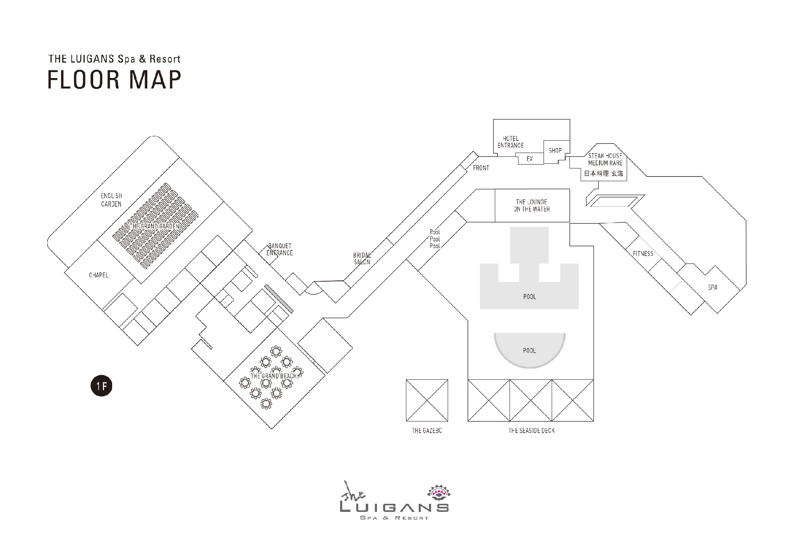

100%
EDIT MODE
Select an item to drag, edit, reorder or delete it.Arrow keys: fine adjustment · Shift + arrow: larger step · ▲▼ in the list: change order

Guide sequenceProgrammeServiceStaff / green room